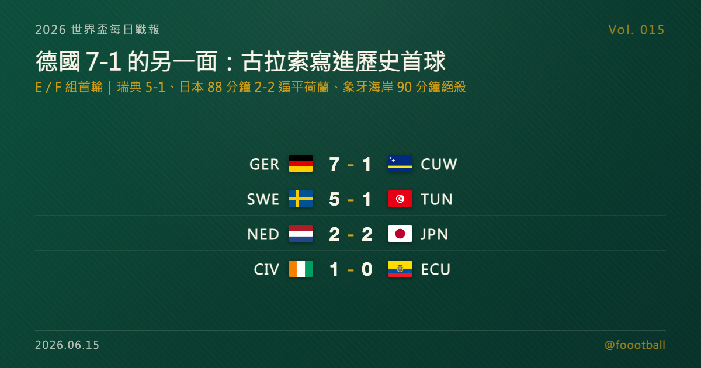

德國 7-1 古拉索強勢宣示、瑞典 5-1 大勝：日本 88 分鐘 2-2 逼平荷蘭、象牙海岸 90 分鐘絕殺
2026 世界盃台北時間 6/15 凌晨到上午，E、F 兩組首輪登場。最大比分出在 E 組：德國在休士頓 7-1 橫掃史上人口最少的參賽國古拉索，哈費茨梅開二度；同組象牙海岸靠 Amad Diallo 第 90 分鐘絕殺 1-0 厄瓜多。F 組瑞典 5-1 大勝突尼西亞、Ayari 梅開二度，另一場日本兩度落後、靠鎌田大地第 88 分鐘扳平 2-2 逼平荷蘭。德國 7-1 觸發本期特刊（另發），但這一夜真正寫進歷史的，是古拉索那顆敗陣中的世界盃隊史首球。

2026 世界盃每日戰報 Vol. 015
§1 即時比分戰報
小組賽全面展開，台北時間從凌晨到上午，E、F 兩組接力打完各自的首輪。最搶眼的比分在 E 組——德國在休士頓 7-1 橫掃首度參賽的古拉索，哈費茨（Kai Havertz）梅開二度，是本日唯一的大比分宣示；同組另一場則是象牙海岸苦戰到第 90 分鐘才由 Amad Diallo 絕殺 1-0 厄瓜多。F 組同樣一冷一熱：瑞典 5-1 大勝突尼西亞，伊薩克（Alexander Isak）與居克列斯（Viktor Gyökeres）的鋒線火力全開；另一場日本兩度落後、靠鎌田大地第 88 分鐘扳平 2-2 逼平荷蘭，拿下寶貴一分。以下是本輪四場賽果：
| 賽事 | 比分 | 場館 | 焦點 |
|---|---|---|---|
| 🇩🇪 德國 — 🇨🇼 古拉索 | 7 - 1 | 休士頓 NRG Stadium（賽事期間亦稱 Houston Stadium） | 哈費茨梅開二度（45'P、88'）；古拉索 Comenencia 21' 攻入隊史世界盃首球 |
| 🇸🇪 瑞典 — 🇹🇳 突尼西亞 | 5 - 1 | 蒙特雷 Estadio BBVA（賽事期間亦稱 Monterrey Stadium） | Ayari 梅開二度（7'、90+6'）、Isak 29'、Gyökeres 59'、Svanberg 84'；Rekik 43' 為突尼西亞追回 |
| 🇳🇱 荷蘭 — 🇯🇵 日本 | 2 - 2 | 阿靈頓（達拉斯）AT&T Stadium（賽事期間亦稱 Dallas Stadium） | 鎌田大地 88' 扳平（小川航基頭球觸鎌田入網），日本兩度落後追平荷蘭 |
| 🇨🇮 象牙海岸 — 🇪🇨 厄瓜多 | 1 - 0 | 費城 Lincoln Financial Field（賽事期間亦稱 Philadelphia Stadium） | 替補 Amad Diallo 90' 接 Singo 右路橫傳絕殺，終結厄瓜多 19 場不敗 |
四場分屬 E、F 兩組，兩組首輪到此打完。積分榜也隨之開出——§2 是現在的形勢。
§2 排行榜區：E／F 組首輪形勢
E 組（首輪打完）——德國與象牙海岸雙雙首戰告捷、各拿 3 分，德國靠 7-1 的巨大淨勝球暫居龍頭：
| # | 球隊 | 賽 | 勝 | 和 | 負 | 進 | 失 | 差 | 分 |
|---|---|---|---|---|---|---|---|---|---|
| 1 | 🇩🇪 德國 | 1 | 1 | 0 | 0 | 7 | 1 | +6 | 3 |
| 2 | 🇨🇮 象牙海岸 | 1 | 1 | 0 | 0 | 1 | 0 | +1 | 3 |
| 3 | 🇪🇨 厄瓜多 | 1 | 0 | 0 | 1 | 0 | 1 | −1 | 0 |
| 4 | 🇨🇼 古拉索 | 1 | 0 | 0 | 1 | 1 | 7 | −6 | 0 |
F 組（首輪打完）——瑞典一場 5-1 獨自領跑，荷蘭與日本 2-2 各拿一分、暫時並列：
| # | 球隊 | 賽 | 勝 | 和 | 負 | 進 | 失 | 差 | 分 |
|---|---|---|---|---|---|---|---|---|---|
| 1 | 🇸🇪 瑞典 | 1 | 1 | 0 | 0 | 5 | 1 | +4 | 3 |
| 2 | 🇳🇱 荷蘭 | 1 | 0 | 1 | 0 | 2 | 2 | 0 | 1 |
| 2 | 🇯🇵 日本 | 1 | 0 | 1 | 0 | 2 | 2 | 0 | 1 |
| 4 | 🇹🇳 突尼西亞 | 1 | 0 | 0 | 1 | 1 | 5 | −4 | 0 |
別忘了本屆晉級規則：12 個小組、每組前兩名加上 8 個最佳第三名，共 32 隊晉級淘汰賽。對首戰失利的厄瓜多、突尼西亞與古拉索來說，沒有人被一場比賽推到牆角——後面還有兩輪，每一分都可能在小組賽收官時變成晉級關鍵。
§3 賽事摘要
- 德國 7-1 古拉索：本日最大比分，也是觸發特刊的一戰。德國從第 6 分鐘 Felix Nmecha（恩梅查）破門起就完全掌握節奏，Nico Schlotterbeck（施洛特貝克）、哈費茨（上半場補時點球）、Jamal Musiala（穆夏拉）、Nathaniel Brown（布朗）、Deniz Undav（溫達夫）接力建功，哈費茨第 88 分鐘再入一球完成梅開二度，德國全場由 6 名球員合力攻入 7 球。對手古拉索是本屆——也是世界盃史上——人口最少的參賽國，這是他們隊史第一次踏上世界盃舞台。即使大比分落後，古拉索仍在第 21 分鐘由 Livano Comenencia（科梅嫩西亞）攻入一球，為這個加勒比小國寫下隊史世界盃的第一顆進球。德國的強勢與古拉索的歷史性首球，是這場 7-1 的一體兩面——完整故事見今日特刊。
- 瑞典 5-1 突尼西亞：F 組另一場大勝。瑞典從第 7 分鐘 Yasin Ayari（阿亞里）破門起就壓制全場，前鋒線伊薩克（Alexander Isak）第 29 分鐘、居克列斯（Viktor Gyökeres）第 59 分鐘各下一城，Mattias Svanberg（斯萬貝里）第 84 分鐘再添一球，Ayari 更在補時第 90+6 分鐘一記遠射梅開二度，把比分鎖在 5-1。突尼西亞並非全無回應——Omar Rekik 在第 43 分鐘為球隊追回一球，可惜整體節奏始終被瑞典的鋒線壓著走。對手握伊薩克、居克列斯兩名歐洲頂級射手的瑞典而言，這是一場火力盡情釋放的開門紅；突尼西亞首戰失利，但小組賽才剛起步，後面仍有調整空間。
- 荷蘭 2-2 日本：本輪最戲劇性的一場。荷蘭兩度由 Virgil van Dijk（范戴克，第 51 分鐘）與 Crysencio Summerville（薩默維爾，第 64 分鐘射入門柱）取得領先，日本卻兩度追平——先是 Keito Nakamura（中村敬斗）第 57 分鐘扳平，最後在第 88 分鐘由 Koki Ogawa（小川航基）的頭球攻門擦到鎌田大地後入網、官方記為鎌田進球，2-2 扳平。面對歐洲傳統強權荷蘭、又兩度落後，日本展現出近年亞洲球隊最被稱道的韌性，把一分硬生生從強敵手中搶了下來。對荷蘭來說，兩度領先卻未能守住、只拿一分難免可惜；但小組賽長路漫漫，這一分對雙方都還留著後續調整的空間。
- 象牙海岸 1-0 厄瓜多：E 組一場膠著的硬仗，由一記補時絕殺定生死。雙方鏖戰到第 90 分鐘，替補上場的 Amad Diallo（阿曼·迪亞洛）接 Wilfried Singo（辛戈）右路推進後送進禁區的橫傳，從禁區邊緣冷靜推射遠角破門，1-0 帶走全部三分，也終結了厄瓜多此前一段長達 19 場的不敗紀錄。其實厄瓜多上半場機會不少，John Yeboah（耶博阿）與 Alan Minda（明達）都曾擊中橫梁，只是始終沒能把優勢轉化成進球；最終在最後一刻被對手一擊致命，首戰吞下一場惜敗。但這支球隊底子仍在，兩輪過後形勢未必不利。對象牙海岸而言，能在這種紀律之戰裡笑到最後，是延續氣勢的好開始。
§4 焦點觀察｜特刊預告：7-1 的另一面——地表最小參賽國，踢進了隊史世界盃第一球
今天觸發了一篇特刊。德國 7-1 這個比分本身已足夠搶眼——6 名球員合進 7 球、哈費茨梅開二度，是一支奪冠級球隊的標準宣示；但真正值得單獨說的，是站在比分另一端的古拉索。
這個位於加勒比海、人口僅約 15.6 萬（大約等於台北市一個行政區）的島嶼，是世界盃史上人口最少的參賽國，這也是他們隊史第一次踏上世界盃舞台。在 78 歲、本屆成為世界盃史上最年長主帥的荷蘭老帥 Dick Advocaat（迪克·艾德沃卡特）帶領下，古拉索一路從中北美區外圍殺出、以不敗之姿晉級。面對德國這樣的對手，七球落敗在意料之中；但第 21 分鐘 Comenencia 的那記進球，替這個小國寫下了隊史世界盃的第一顆進球——在大比分的夜裡，這顆球的份量，遠不只是計分板上的數字。
📖 完整特刊《7-1 的另一面：德國的宣示，與古拉索寫進歷史的第一球》同日發佈，會把德國這場大勝的戰術細節、古拉索這支「最小參賽國」的來時路，以及那顆隊史首球的意義講透。
§5 台北時間明晨看點
E、F 兩組首輪收官後，小組賽的版圖會在接下來幾天快速補齊。台北時間明晨起，輪到 G 組與 H 組第一批球隊登場，更多傳統強權與黑馬即將首度亮相，各組積分榜與出線形勢也會逐日清晰。與此同時，已經打完首輪的小組正等著第二輪的捉對廝殺——對拿到開門紅的德國、瑞典、象牙海岸是鞏固領先的機會，對暫居身後的荷蘭、日本與三支首戰失利的球隊，則是扳回一城的關鍵時刻。明晨的首戰賽果與最新形勢，Vol. 016 接著報。
資料來源：FIFA 賽程與場館資訊、ESPN、Reuters、The Guardian、BBC、Sky Sports、FOX Sports 等賽後報導交叉核對（2026 世界盃 6/14 美加墨當地賽果、進球分鐘、分組與球員資料；古拉索人口與晉級背景）。賽程與時間以台北時間換算、實際以官方公告為準。
常見問題
2026 世界盃 6/14（美加墨當地）有哪些比賽？結果如何？
E、F 兩組首輪共四場：德國 7-1 古拉索、象牙海岸 1-0 厄瓜多（E 組），瑞典 5-1 突尼西亞、荷蘭 2-2 日本（F 組）。德國由 6 名球員合進 7 球、哈費茨梅開二度橫掃首度參賽的古拉索；象牙海岸靠替補 Amad Diallo 第 90 分鐘絕殺終結厄瓜多 19 場不敗。
古拉索是什麼來頭？為什麼這場 7-1 還值得看？
古拉索是位於加勒比海、人口約 15.6 萬的島嶼，2026 是他們隊史第一次踏上世界盃，也是世界盃史上人口最少的參賽國。即使 1-7 落敗，他們仍在第 21 分鐘由 Comenencia 攻入隊史世界盃第一顆進球，這一夜對這個小國別具意義。完整故事見今日特刊。
E 組與 F 組目前積分榜如何？
E 組：德國（淨勝球 +6）與象牙海岸（+1）同積 3 分，德國暫居龍頭，厄瓜多、古拉索 0 分。F 組：瑞典 3 分領跑，荷蘭與日本同積 1 分並列，突尼西亞 0 分。本屆每組前兩名加 8 個最佳第三名，共 32 隊晉級淘汰賽。
Tags：世界盃, 2026世界盃, 德國, 古拉索, 哈費茨, 日本